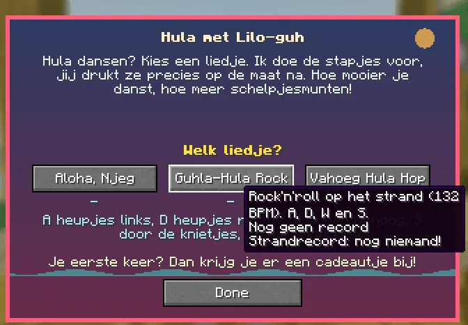

Dance the hula on the Guhwai'i beach: pick a song and follow the steps.
Dans de hula op het strand van Guhwai'i: kies een liedje en volg de pasjes.
The hula danceDe hula-dans
Step onto the flower mat on the podium and pick a song. The steps slide in along a lane towards a pulsing hibiscus: press the right key right on the beat. VAHOEG! (perfect), Njeg!, Guh. or Mis. A combo multiplies your points up to x3, your own guhs dance along, and Lilo-guh sways on the beat. Three brand-new, Elvis-like guh songs (ukulele, lap steel, a slapback guitar and a guh choir):
Stap op de bloemenmat op het podium en kies een liedje. De stapjes schuiven over een baan naar een kloppende hibiscus: druk de goede toets precies op de maat. VAHOEG! (perfect), Njeg!, Guh. of Mis. Een combo vermenigvuldigt je punten tot x3, je eigen guhs dansen mee, en Lilo-guh wiegt op de maat. Drie gloednieuwe, Elvis-achtige guhliedjes (ukelele, lap steel, een slapback-gitaar en een guhkoortje):
| SongLiedje | LevelNiveau | BPMBPM | KeysToetsen |
|---|---|---|---|
| Aloha, Njeg | makkelijk | 88 | only hips: A and Dalleen heupjes: A en D |
| Guhla-Hula Rock | medium | 132 | A, D, W and SA, D, W en S |
| Vahoeg Hula Hop | lastig | 160 | eighth notes, and space on every VAHOEG! shoutachtste noten, en spatie bij elke VAHOEG!-kreet |
A flawless dance is a challenge advancement. At home, the Tiki-radiootje plays the three songs for everyone nearby.
Een foutloze dans is een uitdaging. Thuis speelt het Tiki-radiootje de drie liedjes voor iedereen in de buurt.
Surfen, hula en het Tiki-winkeltje

Pick a songKies een liedje
Highscores in the GuhdexHighscores in de Guhdex
- Hula: makkelijk
- Hula: medium
- Hula: lastig